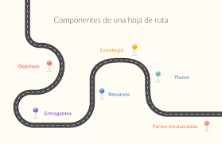
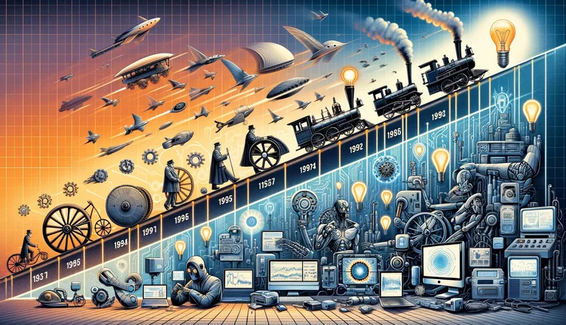
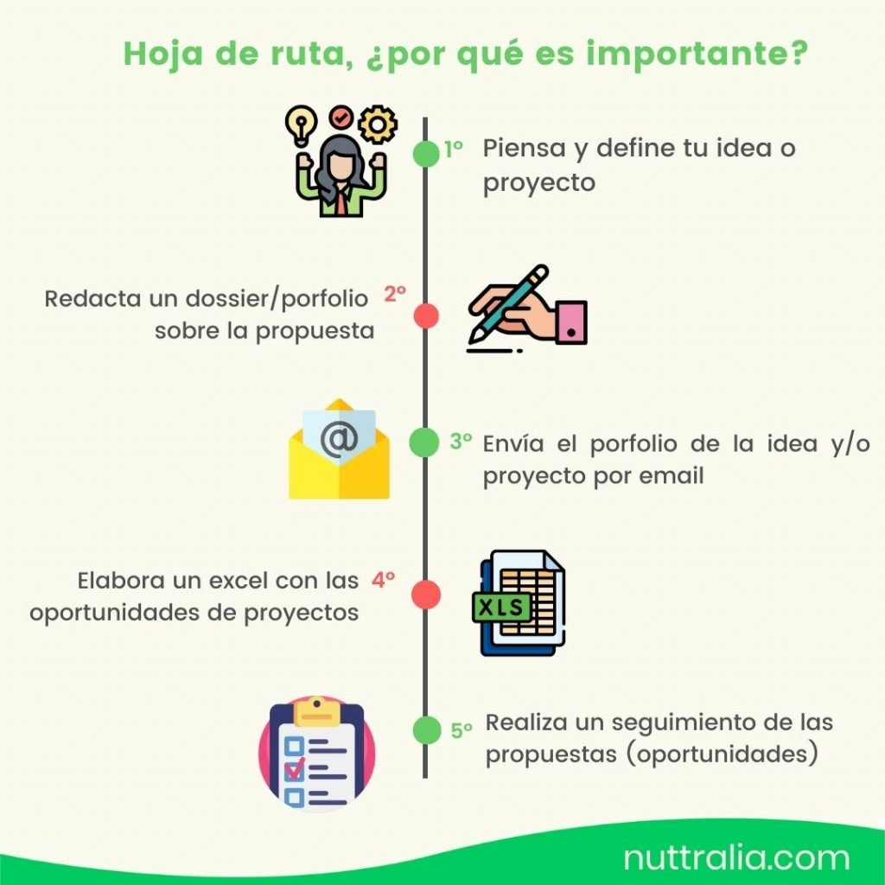
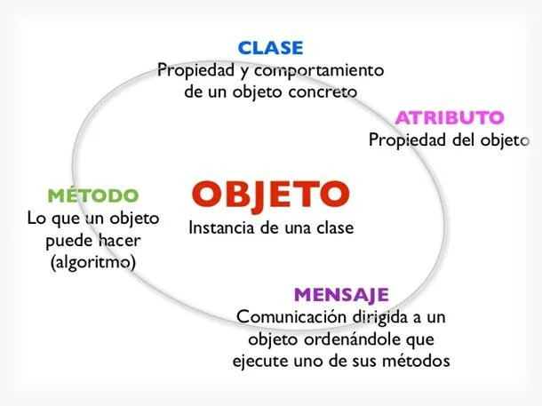

Gestion de la Tecnologia
COLEGIO MAYOR DEL CAUCA
Gestion de la tecnologia
La gestión de la tecnología es una habilidad invaluable que complementa tu formación técnica en ingeniería. Te prepara para afrontar de manera integral los desafíos que enfrentarás en el ámbito profesional, combinando conocimientos técnicos con competencias en planificación, administración y estrategia. Al integrar estas habilidades, estarás mejor equipado para contribuir al éxito de proyectos tecnológicos, liderar equipos y adaptarte a un entorno tecnológico en constante cambio.
Historia
La historia de la tecnología muestra una evolución constante desde herramientas básicas hasta sistemas complejos que transforman la vida moderna. Cada avance ha construido sobre el anterior, reflejando la creatividad, la innovación y la capacidad humana para resolver problemas. Comprender esta historia no solo te proporciona una perspectiva sobre cómo llegamos al presente, sino que también te prepara para anticipar y participar en el futuro de la tecnología.
Creacion hojas de ruta

una hoja de ruta es una herramienta esencial para la planificación y gestión de proyectos. Ofrece una visión clara de los objetivos, hitos, y tareas necesarias para alcanzar el éxito. Al establecer tiempos, responsabilidades y recursos, proporciona una guía estructurada que facilita la coordinación y el seguimiento del progreso. Además, permite ajustes proactivos en respuesta a cambios o desafíos, asegurando que el proyecto se mantenga en el camino correcto. Al integrar una hoja de ruta en tu proceso de gestión, mejorarás la organización, la comunicación y la efectividad en la consecución de tus metas.
evolucón de la tecnologia

Evolución de la tecnologia

La evolución de la tecnología ha sido un motor clave en el cambio de la sociedad. Desde la invención de la rueda y la escritura en la antigüedad hasta la Revolución Industrial y el advenimiento de la era digital, cada avance ha transformado profundamente nuestra vida cotidiana y el entorno laboral. Hoy, la inteligencia artificial y la tecnología de la información están impulsando nuevos cambios, presentando tanto oportunidades como desafíos y destacando la necesidad de adaptación constante
evolucón de la tecnologia
Contenido de una Hoja de Ruta de Gestión Tecnológica

Una hoja de ruta de gestión tecnológica es un plan estratégico que guía la adopción y evolución de la tecnología en una organización. Incluye una visión tecnológica y objetivos estratégicos alineados con las metas del negocio. Evalúa el estado actual de la tecnología y analiza brechas, identificando tendencias y oportunidades emergentes. El plan de implementación detalla proyectos, prioridades, recursos y presupuestos necesarios. También aborda la gestión de riesgos, estrategias de comunicación, y métodos para medir el éxito y realizar ajustes. Finalmente, define la gobernanza y responsabilidades para asegurar una gestión efectiva de la tecnología.
La metodología del Proceso de Objetos
Contenido de una Hoja de Ruta de Gestión Tecnológica

La metodología del Proceso de Objetos se basa en la programación orientada a objetos y incluye varios elementos clave. Objetos y clases son fundamentales: los objetos son instancias de clases, que definen atributos y métodos comunes. La encapsulación oculta el estado interno de los objetos, mientras que la abstracción simplifica la complejidad al mostrar solo las características esenciales. El polimorfismo permite que diferentes objetos respondan a los mismos mensajes de manera específica. Los mensajes facilitan la comunicación entre objetos.